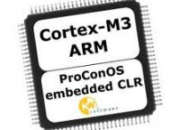
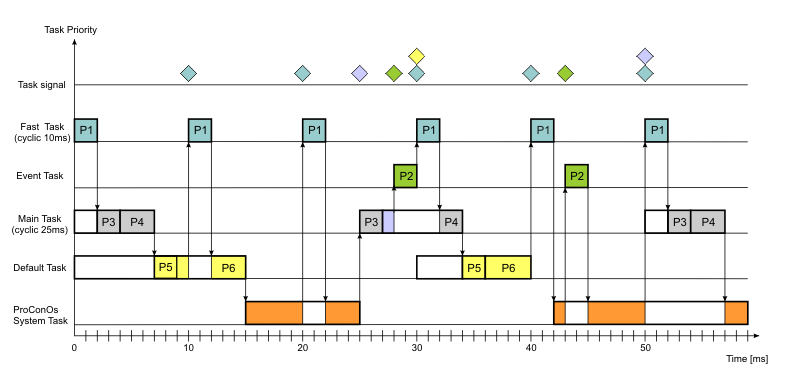
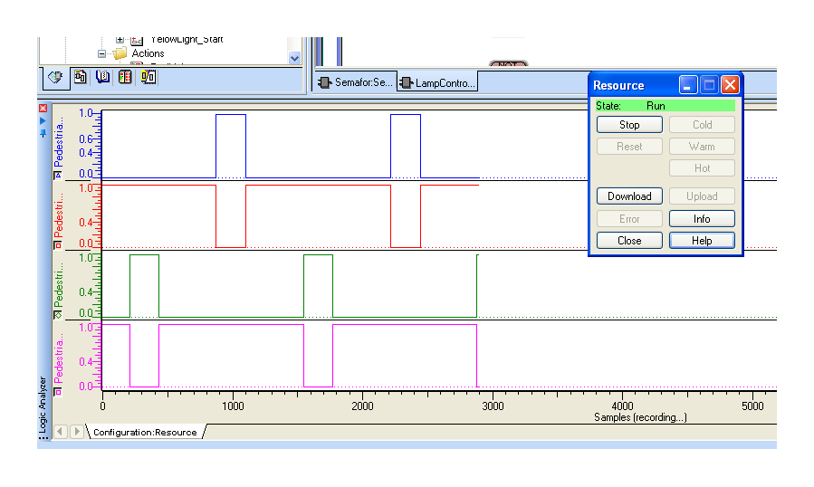
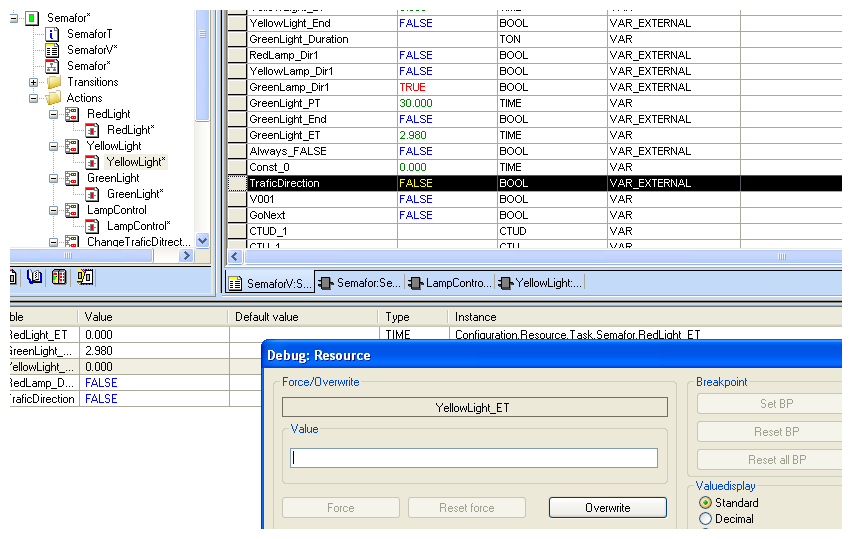
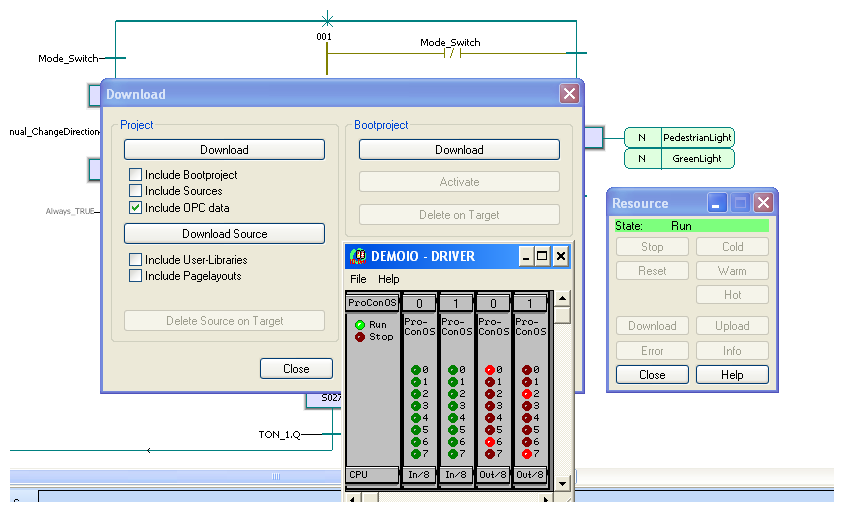

Od početka razvoja PC kompatibilne tehnologije bilo je pokušaja korištenja iste za kontrolu procesne opreme. Glavni problem u razvoju tih aplikacija bilo je to što PC nije bio razvijan kao sustav za rad u stvarnom vremenu (real time). Tek pretvaranje standardnih operativnih sustava (dos, windows, linux) u realtime operativne sustave stekli su se uvjeti za efikasno korištenje PC računala kao procesnih računala. I nakon toga programiranje takvih računala u sustavima automatizacije bilo je teško jer inženjeri automatizacije, u pravilu, nisu bili obučeni za klasično programiranje u asembleru ili višim programskim jezicima dok su vrsni programeri imali problema s poznavanjem industrijskih procesa. Stvaranje efikasnog tima bilo je vrlo teško i skupo stoga su kompanije koje su se bave razvojem takvih sustava odlučile definirati standarde koji su bitno pojednostavili primjeni PC bazirane opreme u sustavima automatizacije. Rezultat te inicijative je IEC63131 standard koji definira smjernice za programiranje suvremenih PLC uređaja a koji je najbolje podržan u takozvanim SofPLC sustavima.
SoftPLC sustavi su softverski proizvodi pomoću kojih standardne hardverske (intel, motorola, arm) i softverske platforme (windows, linux) pretvaramo u moćna procesna računala. Programiranje takvih računala je prilagođeno standardima programiranja običajnih PLC i PAC računala.
{kind=link}
ProConOS soft-PLC
ProConOS (Progammable Controller Operating System) je programsko bazirani PLC sustav koji osigurava PLC specificiran servis na standardnim ili specijalnim hardverskim platformama. To uključuje učitavanje i procesiranje PLC programa kao i mogućnost testiranje i ispravljanja programa (debug) pri pokretanju i održavanju strojeva i postrojenja upravljanih procesnim računalom. Druga definicija za ProConOS je da je on visoko učinkoviti PLC runtime sustav za kompleksne upravljačke aplikacije. Dizajniran je specijalno za IEC61131 normu i sadrži cijeli niz IEC61131 značajki. Dakle da bi ste dobili upotrebljivo procesno računalo trebate prvo izabrati neku stanadardnu sklopovsku opremu (hardware) podesnu za automatizaciju vašeg procesa ili napraviti svoju baziranu na podržanim procesorima. Na takav hardver instaliarate neki od podržanih realtime operativni sustav. Sada je vaše računalo spremno za instaliranje softPLC-a ProConOS. Nakon svega toga imate procesno računalo spremno za programiranje vašeg sustava automatizacije na manje ili više uobičajeni način programiranja PLC-a. PorConOS se isporučuje se s IEC61131 programskom razvojnom okolinom KW Multiprog koja omogućuje lagano programiranje u SFC, LD, STL ili IL programskim jezicima.
{kind=link}
Jedna od bitnih razlika programiranja podržanih od IEC 61131 norme , u odnosu na standarne PLC-e, je mogućnost vremenskog upravljanja izvršavanjem pojednih programskih zadataka (taskova). Za razliku od kontinuiranog izvršavanja vašeg programskog koda IEC 61131 standard opisuje različite modele raspoređivanja vremena rada programskih taskova:
- Default task , svaki resource sadržava jedan default task koji ima najniži prioritete. Taj task nije vremenski raspoređen.
- Cyclice task koji se izvršava periodično u određenim vremenskim intervalima
- System task poziva operacijski sustav PLC-a ako je došlo do promjena stanja PLC-a ili nekakve greške.
- Event or interrupt tasks se aktivira na određeni definirani događa ili stanje
Svaki task ima određeni prioritete. U sustavima s takozvanim raspoređivanja sa preuzimanjem (preemptivnim scheduling) , koji je implementiran u softPLC-u ProConOS-u, task koji ima niži prioritete prekida se odmah kada se aktivira task s višim prioritetom za razliku od none-preemptivnim sustavima gdje nije moguć prekid trenutnog taska od strane taska s višim prioritetom.

{kind=link}
Radna memorija ProConOS-a podjeljana je na slijedeće dijelove:
- PLC program – aktualni izvršni korisnički program
- Međuspremnik (buffer) za interne aktualne podatke
- Procesna memorija koja sadrži sliku procesa a razlikuje:
- I – ulazne podatke
- Q – izlazne podatke
- M – memorijske varijable
- RM – retentivne memorijske varijable
- memorija za takozvani bootproject
- memorija za kompresirani project (kompletan)
Shodno kompatibilnošću s IEC smjernicama ProConOS podržava sve tipove varijabli definirane u standardu a samo programiranje zahtjeva simbolično adresiranje kako memorijskih tako i ulazno/izlaznih varijabli.
Razvojno okruženje KW Multiprog
Za programiranje PLC-a i PAC-a koji podržavaju standard IEC61131 postoji nekoliko razvojnih okolina a jedno od njih je i KW Multiprog. Multiprog je 32-bitna PC aplikacija sa intuitivnim sučeljem i sustavom za pomoć napravljenim po uzoru na razvojna okruženje za programiranju u ostalim modernim programskim jezicima opće namjene. Podržava gotovo se smjernice IEC61131 standarda. Podržani su programski jezici LD, IL, ST, FBD i SCF te njihovo slobodno miješanje u zajedničkom projekt radi primjene najefikasnijeg načina programiranja zahtijevanog algoritma. Administracija projekta te reprezentacija pojedinih elementa projekta i njihova terminologija je po IEC smjernicama. Kompajleri za pojedine hardverske platforme su modularni. Podržana je instalacija, puštanje u pogon te testiranje koristeći ugrađene alate kao što su osciloskopski prikaz statusa i simulator. Korisničko sučelje striktno podržava Windows standarde upravljanja objektima kao i dodatne elemente kao što su čarobnjaci i sustav za pomoć baziran na HTML standardu.
Upravljane projektom u Multiprogu je jednostavno i oslanja se na Windows Explorer strukturu u obliku drva baziranu na IEC61131 softverskom modelu. Pisanja programa moguće je svi 5 programskih jezika definirani EEC61131 standardom a to su:
- • Instruction List (IL)
- • Structured Text (ST)
- • Function Block Diagram (FBD)
- • Ladder Diagram (LD)
- • Sequential Function Chart (SFC)
{kind=link}
Kao što je i nabrojano neki od ovih programskih jezika se programiraju u tekstualnom a neki u grafičkom editoru. Tekstualni editor automatski ispisuje ključne riječi programskih jezika u određenim bojama u ovisnosti o sintaksi a podržano je i automatsko kompletiranje imena korištenih varijabli i strukturnih elementa funkcijski blokova. Grafički editor omogućava slobodno manipuliranje funkcijski blokovima, automatsko povezivanje pojedinih elementa te naknadno ubacivanje ili brisanje bez gubitka strukture. Pojedini programski elementi se ispisuje, kao i kod tekstualnog editora, u posebnim bojama radi što jasnije strukture programa. Na istom radnom prostoru (worksheetu) moguće je miješati sva tri programska jezika: LD, FBD i SFC. Klikom miša na određeno mjesto u grafičkom okruženje moguće je prebaciti se u tekstualni editor i nastavka pisanja programa željenim programskim jezikom. Dodatne dijagnostičke funkcije skraćuju vrijeme puštanja u pogon i testiranja korištenih algoritama u realnom vremenu a to su:
- Logički analizator (Logic Analyzer)
 - Sustav recepata (Recipes)
- Prekidne točke u programu (Breakpoints)
- Pregled memorijskih lokacija (Address debug)
- Izvršavanje programa korak po korak (Single step)
- Prepisivanje vrijednosti u programu ( Overwriting and forcing)
- Izmjene programa u samom PLC-u (Online changes)
- Simulacija programa (PLC simulation)
{kind=link}
{kind=link}
{kind=link}